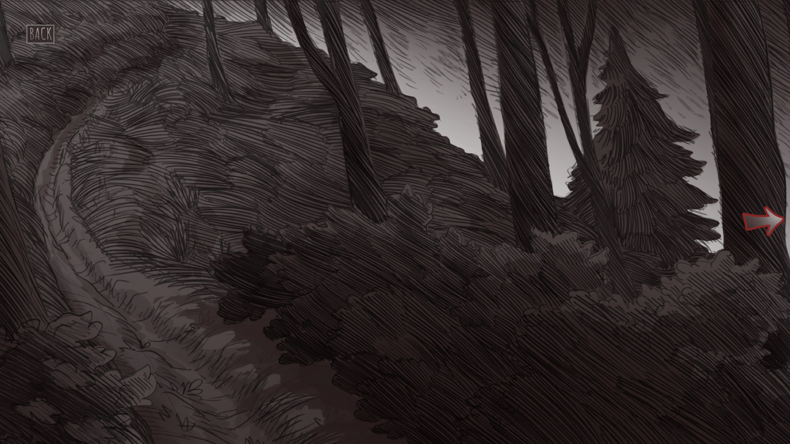

Narrator
You are on a path in the woods.
This project is based on the game Slay the Princess by Black Tabby Games.
It is a fan-made educational project created for a scroll-based storytelling assignment.
This website recreates and summarizes only a few possible chapters and outcomes from the game.
All characters, story concepts, artwork, and original game content belong to Black Tabby Games and their respective rights holders.
Scroll to begin. Click to active BGM

Narrator
You are on a path in the woods.
The path waits for you again.
How long will you keep searching for an ending that satisfies you?
Perhaps the next path will be different.